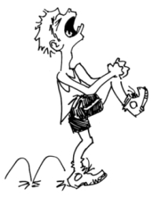

This page has usage examples for the following words:

bruise あざ・打ち身 あざ・うちみ
crutch 松葉杖 まつばづえ
ligament 靱帯 じんたい
orthopedic surgery 整形外科 せいけいげか
orthopedic surgeon 整形外科医 せいけいげかい
plaster cast ギブス
sprain 捻挫 ねんざ
sprain くじく
swelling 腫れ はれ
tissue 組織 そしき
I sprained my right(left) ankle while playing Frisbee.
フリスビーをして足をくじきました。
フリスビーをして あしをくじきました。
I felt a sharp pain at that time, but it subsided.
その瞬間には、ひどい痛みが走りましたが、次第に和らいできました。
そのしゅんかんには、ひどいいたみがはしりましたが、しだいにやわらいできました。
The ankle is swollen and bruised badly.
足首が腫れてひどいあざになっています。
あしくびがはれて ひどいあざになっています。
It's painful to walk.
歩くと足首が痛みます。
あるくと あしくびがいたみます。
Did it fracture or was it just sprained?
骨が折れていますか？ それとも捻挫だけですか？
ほねがおれていますか？ それとも ねんざだけですか？
An X-ray showed no fracture, but two ligaments might be torn.
レントゲン写真の結果、骨折はありませんが、靱帯二本を破損しているようです。
レントゲンしゃしんのけっか、こっせつはありませんが、じんたい２ほんを はそんしているようです。
How long will it take before I can walk normally?
どのくらいで元通りに歩けますか？
どのくらいで もとどうりにあるけますか？
Can I return to sports?
スポーツも今まで通りに出来ますか？
スポーツも いままでどうりにできますか？
A conversation between a patient and a doctor about the sprain
Patient:
The other day, I was playing Frisbee with close friends, as we often do. Then, I lost my footing over a small hole in the ground. A sharp pain ran through my ankle. As the pain subsided in a few minute, I left it untreated and began walking. About an hour later, the ankle started swelling a great deal. I finally went to see a doctor a few days later. I was told that I had inured a tendon. My ankle looked terrible then, and I was scolded by the doctor for waiting so long.
ある日、いつものように親しい友人数名が集まって、フリスビーゲームを楽しんでいました。「あっ！」と地面の小さな穴に足を引っかけたかと思うと、足首に激しい痛みが走りました。しかし、数分後には、やや痛みが和らいだので、何の手当てもせずに歩いたところ、約一時間後には、みるみる腫れ上がってきたのです。やっと、数日後にお医者さんに診てもらい、靱帯を痛めているということが分かりました。その時には、既に、腫れとあざでひどい状態でした。お医者さんには随分叱られてしまいました。
Doctor:
The joint is supported by strong fibrous connective tissues called ligaments. Tendons insert around ligaments to the bone. When powerful external force, such as in a sprain, is added on the joint, the tendon is damaged. Bones may also be fractured. The joint may not be swollen right after injury, and we often leave a sprain untreated. However, exudates and blood begin to accumulate in the joint. Injuries to tendons most often occur in the ankle. Keep in mind that you apply icepack within 24 hours of injury and hot pack/warm compress thereafter. The ankle is an important joint to support the body. You should be seen without delay by your doctor, or preferably an orthopedic surgeon, or in the emergency outpatient clinic, if it is late in the day.
関節は、靱帯と呼ばれる強い繊維性結合織で周囲から支えられています。強い外力が関節に加わると、靱帯が損傷し、又、骨折が起こることも稀ではありません。受傷直後はさした腫れもなく放置しておきがちですが、滲出液や血液がたまってきます。靱帯損傷は、足首に最も多くみられます。受傷後２４時間以内でしたら冷湿布、それ以後は温湿布と覚えておきましょう。足首は身体を支える大切な関節です。早めに整形外科医の手当てを受ける事をおすすめします。時間外でしたら、病院の緊急外来でみてもらえます。

My two cents 一言おせっかい
Within 24 hours use an icepack, after that use a hotpack
一応の目安として、「２４時間以内なら冷湿布、それ以上なら温湿布」
[ne01]
| © 1995-2013 NACOS International Institute. All Rights Reserved. |